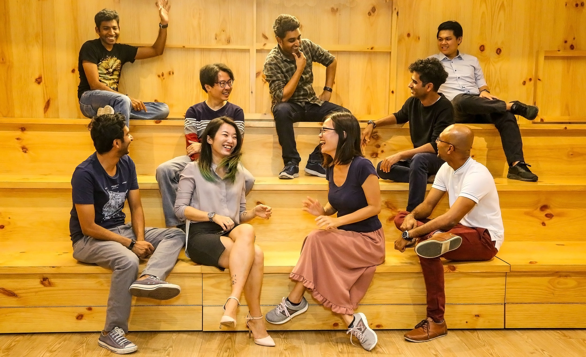
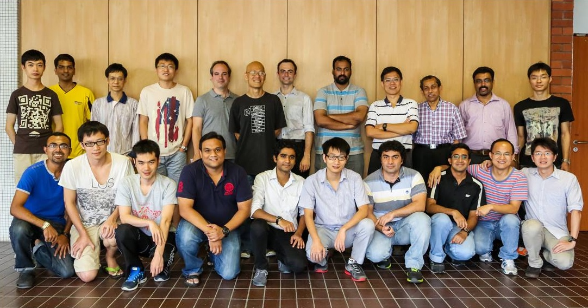

I'm a Ph.D. candidate at the Communication and Internet Research group of Prof. Chan Mun Choon at the School of Computing of the National University of Singapore. My research lies at the confluence of Internet of Things (IoT) and the Wireless Sensor Networks (WSN). More specifically, I aim at designing reliable and efficient wireless communication protocols tailored for the challenging urban environment facing severe cross-technology interference (CTI). Taking a break from Ph.D., I interned at Microsoft Research India where I collaborated with Dr. Ramachandran Ramjee, Dr. Krishna Chintalapudi and Dr. Ranjita Bhagwan of the Mobility, Networks and Systems group to build a Smart HVAC system.
I completed bachelor's degree in Computer Science and Technology (CST) at the Indian Institute of Engineering Science and Technology, Shibpur where I got introduced to WSN by my undergraduate supervisor Prof. Sipra DasBit. It was then that I started playing around with Arduino devices communicating over low power ZigBee stack.
SoCBytes have featured some fun facts about me and my personal life in their blog. Thanks to Toh Tien-Yi for maintaining it for SoC members. Kudos!


At School of Computing, National University of Singapore, I served as teaching assistant for the following lectures:
Oct 2018: Our paper Indriya got accepted at TRIDENTCOM 2018
Jan 2018: Our paper Codecast got accepted at IPSN 2018
Jan 2018: Our paper EleTrack got accepted at EWSN 2018
Apr 2017: Our paper Syncast got accepted at TOSN 2016
Nov 2016: Passed Thesis Proposal
Aug 2016: Awarded NUS Research Achievement Award
Apr 2016: Oppcast received best demo award at IPSN 2016
Feb 2016: Demo accepted at IPSN 2016
Jan 2016: Our Oppcast paper got accepted at IPSN 2016
Nov 2015: Our PSync paper got accepted at INFOCOM 2016
Nov 2015: Demo accepted at ICDCN 2016
Nov 2015: Presented at SenSys 2015 Doctoral Colloquium
Oct 2015: 2nd at NUS Three Minute Thesis Challenge
May 2015: Research Intern at Microsoft Research India
This page uses the Perfect 'Left Menu' 2 Column Liquid Layout by Matthew James Taylor. View more website layouts and web design articles.